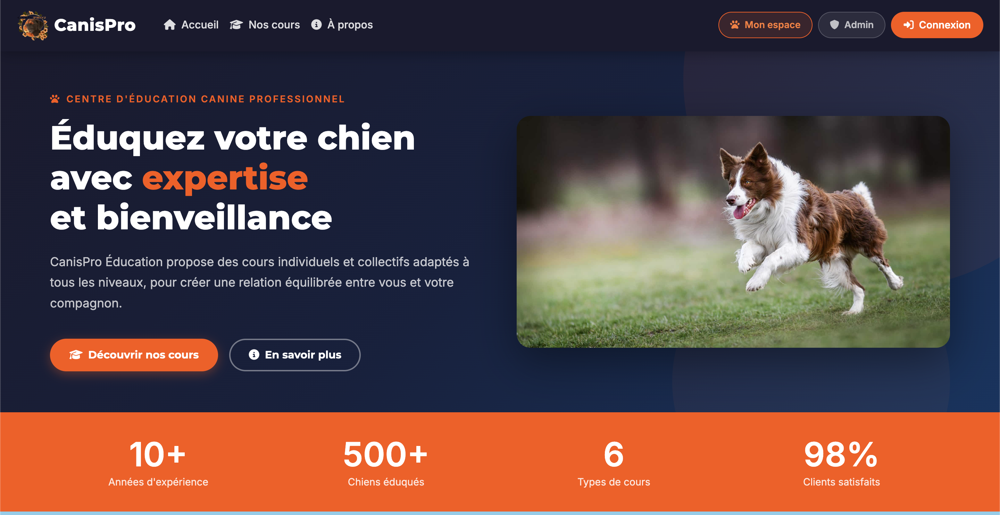
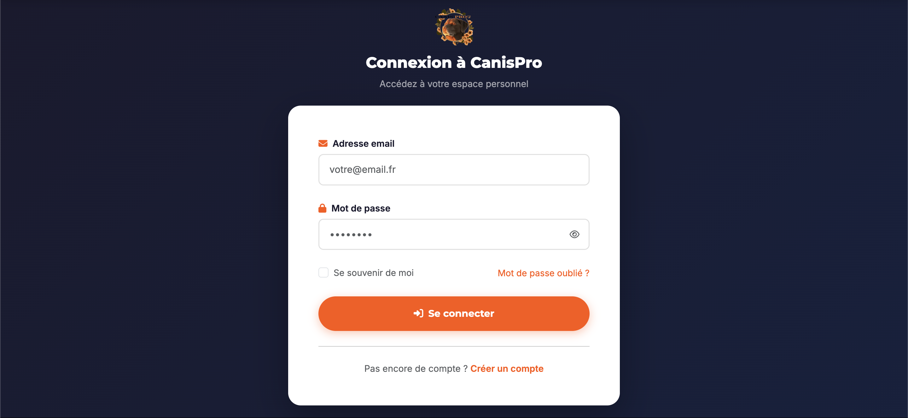
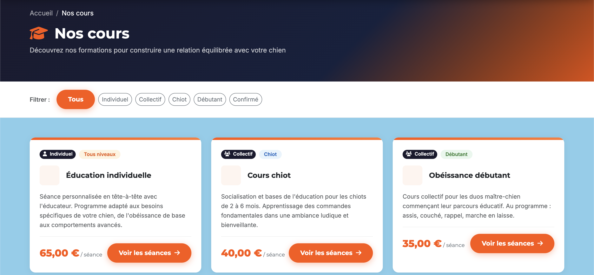
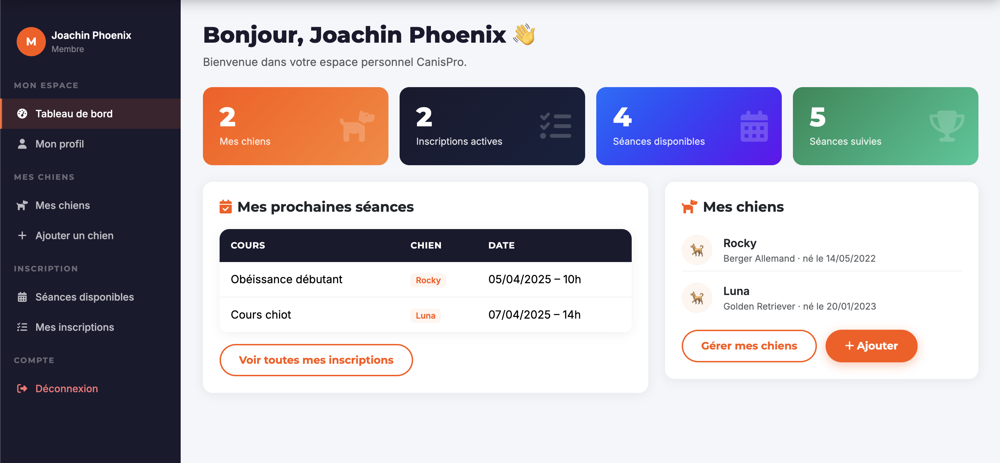
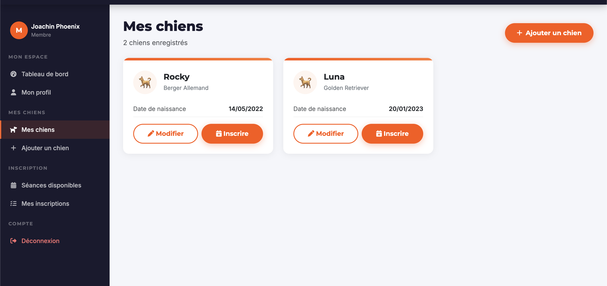
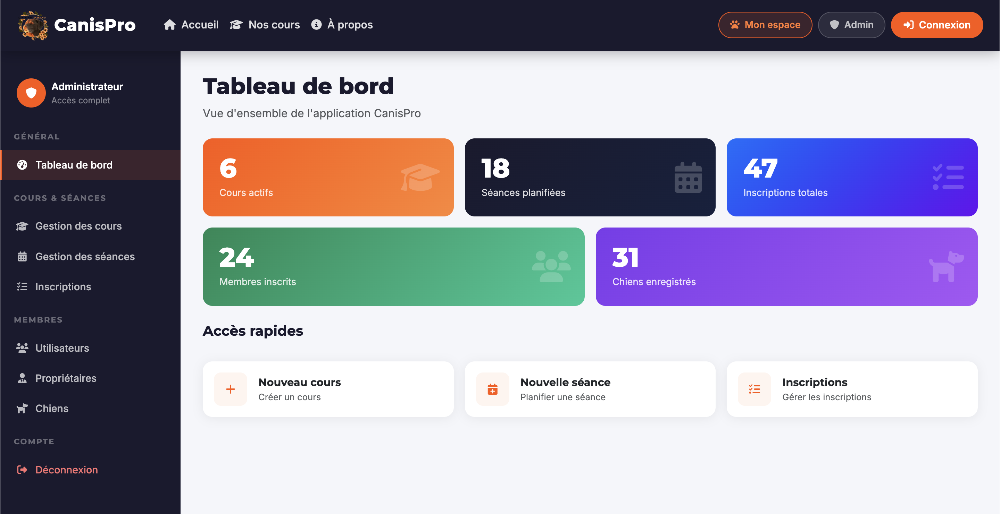
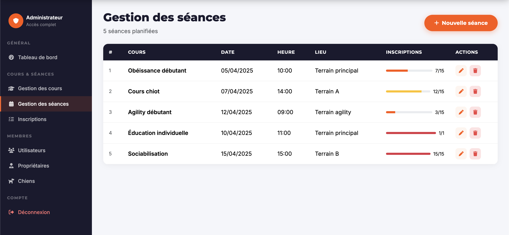

CanisPro Éducation
Plateforme moderne de gestion d'éducation canine
Application web moderne développée pour numériser la gestion d'un centre d'éducation canine.
Offre une plateforme intuitive pour les clients (propriétaires) et un Back-Office complet pour les administrateurs.

Page d'accueil : Bannière sombre avec accentuation orange vibrant.
🎯 Le Besoin
L'éducation canine moderne se concentre sur le bien-être de l'animal et la relation avec son propriétaire, nécessitant un suivi rigoureux des séances (individuelles ou collectives), des inscriptions et des profils des chiens.
L'objectif de CanisPro est de numériser cette gestion à travers un outil centralisé, professionnel et rassurant pour les clients.
Architecture globale :
- Espace Public : Accueil, Catalogue des cours, Inscription
- Espace Membre : Tableau de bord, Gestion des chiens, Réservation
- Espace Admin : Back-Office, Gestion pédagogique, Clientèle
🎨 Choix UI / UX & Design
L'interface a été entièrement pensée pour dégager une image professionnelle, rassurante et dynamique. La typographie s'appuie sur Google Fonts (Montserrat & Inter) avec Font Awesome pour l'iconographie.
Palette de Couleurs
Teintes foncées (Bleu nuit/Noir) pour l'élégance et un Orange vibrant (#ff5400) comme couleur primaire d'accentuation.
Composants "Cards"
Utilisation massive de cartes avec de légères ombres portées pour structurer l'information de manière claire et lisible.
Navigation Fluide
Sidebars fixes (barre de navigation latérale) pour les espaces connectés permettant une expérience utilisateur rapide et intuitive.

Formulaire de connexion épuré et centré avec des icônes dans les labels.

Catalogue des cours : Grille de cartes avec badges de niveaux (Débutant/Chiot).
🧑🤝🧑 Espace Membre (Client)
L'espace sécurisé du propriétaire lui permet de gérer toutes ses interactions avec le centre. Construit autour d'une barre de navigation latérale, le tableau de bord offre une vue d'ensemble immédiate.
Fonctionnalités Membre :
- Dashboard : Cartes de statistiques en couleur et accès rapides
- Gestion des chiens : Ajouter, lister et modifier ses chiens
- Inscriptions : Consultation et réservation aux séances disponibles

Tableau de bord très visuel avec cartes statistiques.

Affichage sous forme de cartes de chaque chien enregistré avec icône 🐕.
🛠️ Back-Office Administrateur
Un espace de gestion complet permettant au centre de piloter son activité quotidienne, ses cours, ses séances et de suivre l'ensemble de sa clientèle.

Dashboard Admin : Statistiques globales (utilisateurs, chiens, cours) et raccourcis d'actions rapides.

Gestion des séances : Indicateur visuel (barre de progression) des places restantes et boutons d'actions modernes.